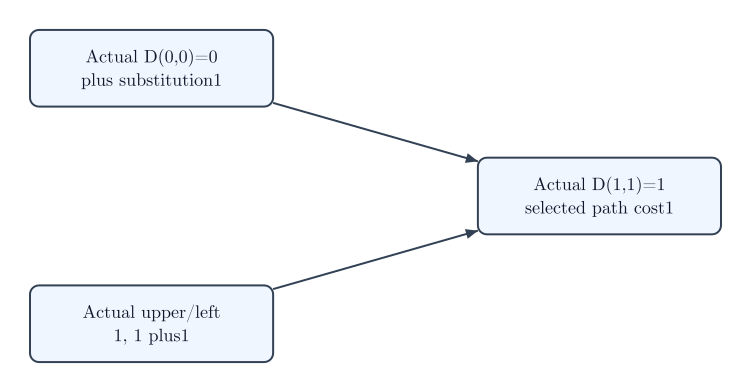
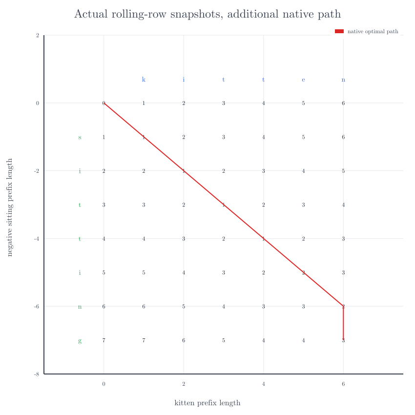
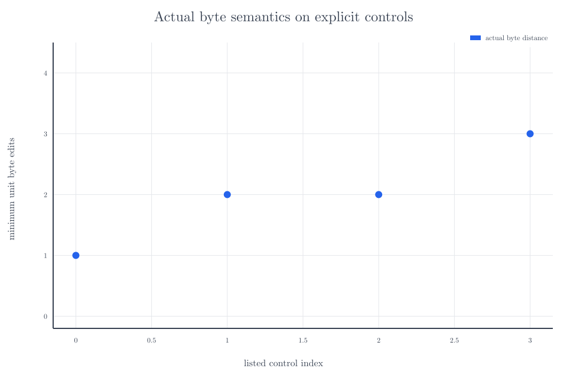
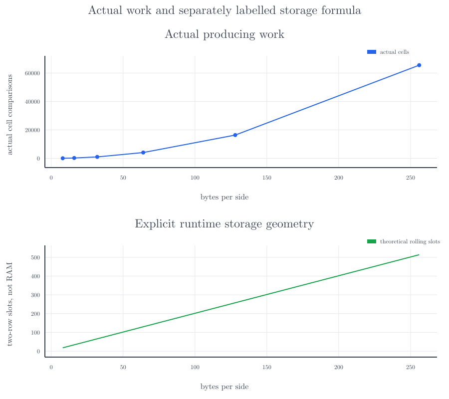

Levenshtein byte edit distance
Abstract
Unit insertions, deletions and substitutions define the shortest edit path between two byte strings. We retain the original examples and kitten/sitting table, capture the rows actually produced by the two-row library kernel and inspect an additional native optimal traceback. Byte semantics, optional capture costs and the distinction from insertion/deletion-only LCS distance are explicit.
Prefix distances
Let D(i,j) compare prefixes of the actual row and column byte strings. Empty boundaries cost their prefix lengths. Every edit path into an interior cell ends with a deletion, insertion or diagonal match/substitution, giving
Induction over prefix lengths proves shortest-path optimality. The ordinary implementation keeps only two rolling rows, placing the shorter input in columns; equal lengths put original b in rows. Capture copies each genuinely computed row after the producer swaps buffers. An additional native traceback then reads that captured table, preferring an optimal diagonal, then up, then left. This extra work is explicitly absent from the ordinary scalar call.
A tiny actual substitution
Comparing a and b costs1, whereas insertion/deletion-only distance would cost2. The concept diagram uses the real captured boundary alternatives and actual selected diagonal path cost.
#include <dm/dm.hpp>
int main() {
std::filesystem::create_directories("build");
auto t = dm::algorithms::levenshtein_trace("a", "b");
auto e = t.path[0];
std::print("| actual distance | actual diagonal cost | actual row prefix | actual column prefix | " "actual predecessor row | actual predecessor column |\n| ---: | ---: | ---: | ---: | ---: | " "---: |\n| {} | {} | {} | {} | {} | {} |\n",
t.analysis.distance, e.cost, e.row, e.column, e.next_row,
e.next_column);
dm::graphics::Diagram d;
d.node("diagonal", {0, 2},
std::format("Actual D(0,0)={}\nplus substitution1", t.table[0][0])).node("neighbors", {0, -2}, std::format("Actual upper/left\n{}, {} plus1", t.table[0][1], t.table[1][0])).node("cell", {7, 0}, std::format("Actual D(1,1)={}\nselected path cost{}", t.table[1][1], e.cost)).edge("diagonal", "cell").edge("neighbors", "cell").save_svg("build/levenshtein_substitution.svg");
}| actual distance | actual diagonal cost | actual row prefix | actual column prefix | actual predecessor row | actual predecessor column |
|---|---|---|---|---|---|
| 1 | 1 | 1 | 1 | 0 | 0 |

Original pair results and kitten/sitting table
Retain kitten/sitting, flaw/lawn, saturday/sunday, book/back, empty/abc and distance/distance. Their scalar results below come directly from the canonical API. For the original detailed pair, actual rows are sitting and columns kitten, because the shorter string occupies rolling-row columns. This transpose of the old display preserves the exact symmetric distance while showing the real producer orientation. The figure overlays the additional native optimal path onto actual row snapshots. No report-side DP or traceback reconstruction remains.
The familiar three-edit kitten→sitten→sittin→sitting script explains the cost3; the displayed native path is in the explicit sitting-row/kitten-column orientation and need not be that same forward textual script.
#include <dm/dm.hpp>
int main() {
std::filesystem::create_directories("build");
std::print("| original first bytes | original second bytes | actual scalar distance |\n| --- | --- | " "---: |\n");
for (auto[a, b] : std::vector<std::pair<std::string, std::string>>{
{"kitten", "sitting"}, {"flaw", "lawn"}, {"saturday", "sunday"},
{"book", "back"}, {"", "abc"}, {"distance", "distance"}
})
std::print("| {} | {} | {} |\n", a.empty() ? "empty" : a, b,
dm::algorithms::levenshtein_distance(a, b));
auto t = dm::algorithms::levenshtein_trace("kitten", "sitting");
std::print("\nActual row bytes {}; actual column bytes {}.\n\n| actual row prefix | empty | k | i | t | " "t | e | n |\n| ---: | ---: | ---: | ---: | ---: | ---: | ---: | ---: |\n",
t.row_bytes, t.column_bytes);
auto p = dm::graphics::RPlot::create();
for (std::size_t i = 0; i < t.table.size(); ++i) {
std::print("| {} |", i);
for (std::size_t j = 0; j < t.table[i].size(); ++j) {
std::print(" {} |", t.table[i][j]);
p.text(j, -double(i), std::to_string(t.table[i][j]), {31, 41, 55},
12);
}
std::print("\n");
}
std::vector<double> x, y;
for (auto &e : t.path) {
x.push_back(e.column);
y.push_back(-double(e.row));
}
x.push_back(0);
y.push_back(0);
p.line(x, y, "native optimal path", {220, 38, 38}, 2);
for (std::size_t j = 0; j < t.column_bytes.size(); ++j)
p.text(j + 1, .7, t.column_bytes.substr(j, 1), {37, 99, 235}, 14);
for (std::size_t i = 0; i < t.row_bytes.size(); ++i)
p.text(-.6, -double(i + 1), t.row_bytes.substr(i, 1), {22, 163, 74}, 14);
p.size(850, 850).x_limits(-1.5, 7.5).y_limits(-8, 2).title(
"Actual rolling-row snapshots, additional native path").x_label(
"kitten prefix length").y_label("negative sitting prefix length").save_svg("build/levenshtein_original.svg");
}| original first bytes | original second bytes | actual scalar distance |
|---|---|---|
| kitten | sitting | 3 |
| flaw | lawn | 2 |
| saturday | sunday | 3 |
| book | back | 2 |
| empty | abc | 3 |
| distance | distance | 0 |
Actual row bytes sitting; actual column bytes kitten.
| actual row prefix | empty | k | i | t | t | e | n |
|---|---|---|---|---|---|---|---|
| 0 | 0 | 1 | 2 | 3 | 4 | 5 | 6 |
| 1 | 1 | 1 | 2 | 3 | 4 | 5 | 6 |
| 2 | 2 | 2 | 1 | 2 | 3 | 4 | 5 |
| 3 | 3 | 3 | 2 | 1 | 2 | 3 | 4 |
| 4 | 4 | 4 | 3 | 2 | 1 | 2 | 3 |
| 5 | 5 | 5 | 4 | 3 | 2 | 2 | 3 |
| 6 | 6 | 6 | 5 | 4 | 3 | 3 | 2 |
| 7 | 7 | 7 | 6 | 5 | 4 | 4 | 3 |

Byte semantics and metric scope
The API compares complete std::string byte sequences, including embedded NUL. It does not decode Unicode code points, grapheme clusters or canonically equivalent spellings. UTF-8 e-acute consists of two bytes, so comparing those two bytes with ASCII e can cost2. Adjacent transposition is not a single Levenshtein edit. The resulting unit byte distance is symmetric and obeys the triangle inequality: reverse an edit path for symmetry and concatenate paths for the triangle bound. These statements concern this fixed edit alphabet and costs, not visually perceived text similarity.
#include <dm/dm.hpp>
int main() {
std::filesystem::create_directories("build");
std::vector<std::pair<std::string, std::string>> pairs{
{std::string("a\0b", 3), std::string("a\0c", 3)}, {"\xc3\xa9", "e"},
{"ab", "ba"}, {"", "abc"}
};
std::vector<std::string> labels{"embedded NUL", "UTF8 bytes",
"transposition", "empty prefix"};
std::vector<double> x, y;
std::print("| explicit byte control | actual first byte length | actual second byte length | actual " "distance | actual reverse distance |\n| --- | ---: | ---: | ---: | ---: |\n");
for (std::size_t i = 0; i < pairs.size(); ++i) {
auto & [a, b] = pairs[i];
auto d = dm::algorithms::levenshtein_distance(a, b);
std::print("| {} | {} | {} | {} | {} |\n", labels[i], a.size(),
b.size(), d, dm::algorithms::levenshtein_distance(b, a));
x.push_back(i);
y.push_back(d);
}
auto p = dm::graphics::RPlot::create();
p.points(x, y, "actual byte distance", {37, 99, 235}, 6).y_limits(-.2, 4.5).title("Actual byte semantics on explicit controls").x_label("listed control index").y_label("minimum unit byte edits").save_svg("build/levenshtein_bytes.svg");
}| explicit byte control | actual first byte length | actual second byte length | actual distance | actual reverse distance |
|---|---|---|---|---|
| embedded NUL | 3 | 3 | 1 | 1 |
| UTF8 bytes | 2 | 1 | 2 | 2 |
| transposition | 2 | 2 | 2 | 2 |
| empty prefix | 0 | 3 | 3 | 3 |

Rolling storage versus full capture
For n=m, the ordinary/count-only producer evaluates n2 cells but keeps only2*(n+1) rolling slots. This storage formula is mathematical geometry, not an allocator or RAM measurement. Optional full capture retains(n+1)2 actual table cells plus inputs and optimal path, so it intentionally gives up the rolling memory advantage. The following actual count-only runs show producing cell counts and equal comparisons; equalities count all DP cell byte matches, not aligned matches or edit-script length.
#include <dm/dm.hpp>
int main() {
std::filesystem::create_directories("build");
std::vector<double> x, cells, slots;
std::print("| original bytes per side | actual cell comparisons | actual equal comparisons | " "theoretical rolling slots, not measured memory |\n| ---: | ---: | ---: | ---: |\n");
for (int n : {8, 16, 32, 64, 128, 256}) {
std::string a(n, 'a'), b(n, 'b');
auto r = dm::algorithms::levenshtein_analyze(a, b);
std::print("| {} | {} | {} | {} |\n", n, r.work.cells,
r.work.equalities, 2 * (n + 1));
x.push_back(n);
cells.push_back(r.work.cells);
slots.push_back(2 * (n + 1));
}
auto p = dm::graphics::RPlot::create(), q = dm::graphics::RPlot::create();
p.line(x, cells, "actual cells", {37, 99, 235}, 2).points(x, cells, "",
{37, 99, 235}, 4).title("Actual producing work").x_label("bytes per side").y_label("actual cell comparisons");
q.line(x, slots, "theoretical rolling slots", {22, 163, 74}, 2).title(
"Explicit runtime storage geometry").x_label("bytes per side").y_label(
"two-row slots, not RAM");
dm::graphics::RLayout::create(2, 1).add(p).add(q).size(900, 800).title(
"Actual work and separately labelled storage formula").fit_panels().save_svg("build/levenshtein_work.svg");
}| original bytes per side | actual cell comparisons | actual equal comparisons | theoretical rolling slots, not measured memory |
|---|---|---|---|
| 8 | 64 | 0 | 18 |
| 16 | 256 | 0 | 34 |
| 32 | 1024 | 0 | 66 |
| 64 | 4096 | 0 | 130 |
| 128 | 16384 | 0 | 258 |
| 256 | 65536 | 0 | 514 |

Contracts and verification
Empty inputs are valid. Complete row/cell/distance-increment geometry is checked before allocation. Scalar/count-only calls retain two rows and perform no traceback. Capture conservatively admits all input bytes, every table cell and up to n+m move records before copying/evaluation. captured_entries reports actual input/table/path records, so conservative admission can reject an eventual shorter path. The default million-record cap excludes fields/capacities/runtime rows/output copies and bytes/RAM;0 disables only the optional cap. All retained strings, rows and moves are owned.
An independent full-table byte reference verified500 original-orientation pairs
against actual rolling-row snapshots and distances. Another1000 arbitrary-byte
scalar results matched the frozen implementation exactly. Native tests
independently traverse all short binary edit graphs, verify native optimal path
costs and retain every original pair plus
NUL/UTF8/transposition/empty/orientation/quota/ownership controls. The complete
ten-report batch passed77 native CTest cases,39 directly instrumented ASan/UBSan
cases,106 compiled/executed public examples,479/479 scoped definitions and ten
representative clangd hovers. All4 complete report programs executed and all4
native figures were visually reviewed. HTML/Markdown computed result and
identical source/build/export figure bytes passed verification. Repeatable
receipts are retained under build/mepml-conversion/batch-194-203/.
References
R. A. Wagner and M. J. Fischer(1974), The String-to-String Correction Problem, Journal of the ACM21(1),168–173. The implementation specializes the recurrence to unit byte insertion/deletion/substitution costs and uses rolling rows for ordinary calls.